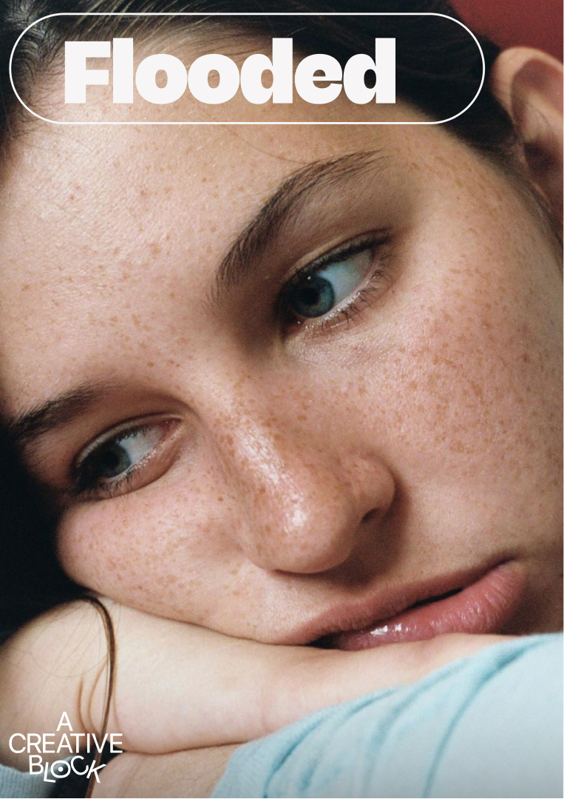

What's really stopping
the work
For anyone blocked on a project that matters. We find what's driving the stuckness—then move it.
Four ways in.



It's rarely one thing.
The same stuck feeling can trace to very different drivers. We read the whole picture first.
The block is the symptom. We work on the cause.
"Just push through" adds shame to a problem that was never about willpower. We start one step earlier.
Serious, not woo.

Evidence-informed
Grounded in research and established theory—and honest about where it stops.

Coaching and consulting
The person and the project, not one or the other. We move between them as the work asks.

A trained coach
MOE-certified and a member of the Association for Coaching. Accountable practice, not opinion.

Access matters
Reduced-fee places for those who need them. No payslips, no humiliating proof.
Pick a door.
Bring the project that matters.
Coaching, consulting, or a blend—from a single focused session to a deeper arc.
Explore individual support → For organisationsUnstick the whole team.
Briefs, feedback, roles and pace—workshops, resets and advisory for creative teams.
Explore organisation support →